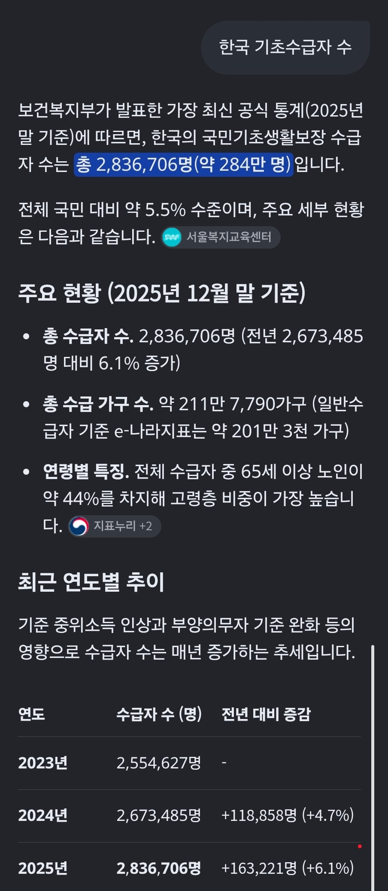
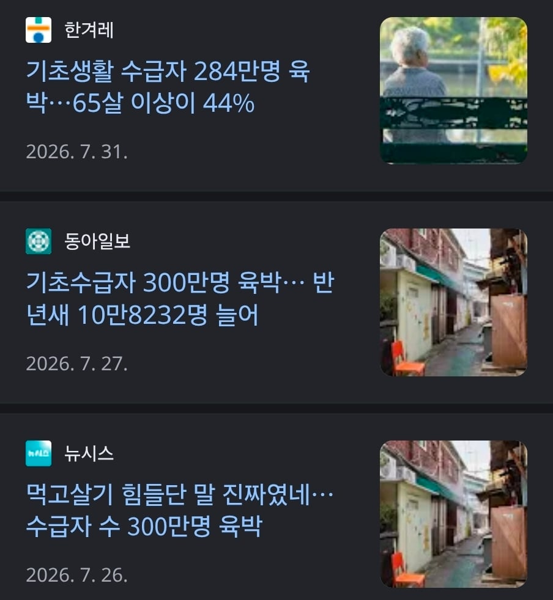
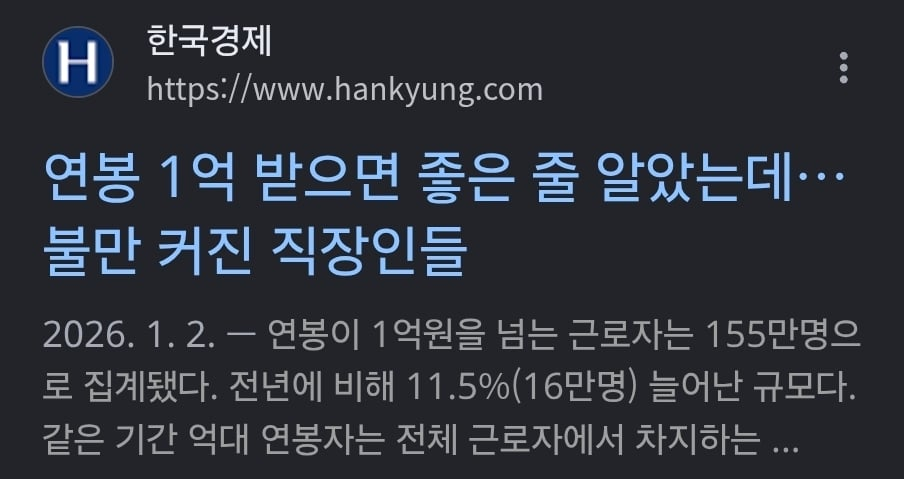

기초수급자수가 300만명을 앞두고 있음

1억연봉자수는 갈수록 늘어나고있고
한국의 세금은 고소득층이 대부분 부담하고 있음
직장인들중 33퍼센트는 면세자비율
갈수록 양극화가 심해지는것 같은데
일본처럼 취업난이 없어지는 대신
모두가 적게 받는것이 좋은가
아니면 계속 이대로 가는것이 좋은가
잘모르겠음


기초수급자수가 300만명을 앞두고 있음

1억연봉자수는 갈수록 늘어나고있고
한국의 세금은 고소득층이 대부분 부담하고 있음
직장인들중 33퍼센트는 면세자비율
갈수록 양극화가 심해지는것 같은데
일본처럼 취업난이 없어지는 대신
모두가 적게 받는것이 좋은가
아니면 계속 이대로 가는것이 좋은가
잘모르겠음
저거 심지어 가짜 기생수도 제법 있다는듯 사업망한척 재산 돌려놓고 돈타먹는 개씨이이발련들 부모님 가게에 손님으로 몇번 봤다하심
카더라만 주장하지말고 그런사람 있으면 니가 신고해라. 보상금이 무려 수천만원이다. (환수금의 30%)
그동안 생계급여 받은돈 다 토해내야되고 형사처벌까지 받는다.
부모님 추가 노후자금 마련하시라고 말씀드려봐야겠네 어차피 이제곧 가게 접으실꺼라 그 사람 안마주치고 좋네 ㅋㅋㅋ
제법 수준이 아니고 존나 많지 않을까
참고로 만 30세 이상이고 단독세대로 나와있으면 소득 재산 기준만 충족하면 주거급여 수급자 대상으로 너무나도 손쉽게 기초수급자 자격이 됨
대부분의 공공임대 1순위는 기초수급자인데
공공임대를 쇼핑하듯 지원하고, 맘에 들지 않는 곳은 당첨이 돼도 입주하지 않는 경우가 허다함.
정말 상황이 절박한 '기초수급자'가 그런걸 따질 여유가 어디서 나올까..?
저거 부풀려진거다. 180만명임.
그리고 재산이 없는 경우 경제적으로 힘들고 어려운 사람은 딱 3개월간은 누구나 생계급여 수급자가 가능함.
이후 65세인가 60세인가 전까지 3개월 경과자는 노동력이 있다면 생계급여 중단된다.(심각한 질병과 중증장애 있어야 유지됨)
생겨급여는 1인 80만원/ 2인 120만원/ 3인 160만원이다.
주거급여 80만명(10~35만원 월세만 지원됨) / 교육급여 30만명(국민취업지원제도=교육비만지원)을 추가해서 숫자를 부풀린거임.
주거급여는 월급이 낮고 재산이 없는 사람은 누구나 신청할 수 있으니 동사무소에 알아봐라.
딱 3개월간 사회안전망이 망한사람들에게 아무 조건없이 주어지는 건데 이걸 건들면 망한사람들 전부 자살하게 된다.